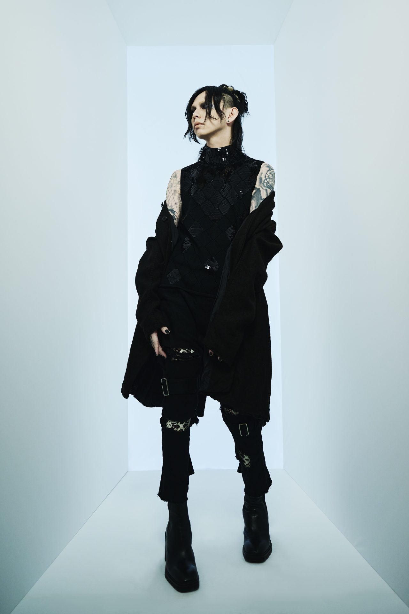

MEMBER
Vo. 하즈키(葉月)
1982년 12월 10일생. 혈액형 B형.
경력 : KUSSE→베리→Deathgaze→현재
lynch.의 대부분 작사 및 작곡을 담당하고 있다.
최근에는 솔로 활동도 활발히 하고 있으며 게임 유튜버로도 활동 중이다.
Gu. 레오(玲央)
1974년 11월 3일생. 혈액형 A형.
경력 : Lustair→Kein→GULLET→현재
본명은 코우가 레오(古賀玲央). 리더이자 리드기타를 담당한다.
기재 덕후이며 강아지 애호가로 알려져 있다.
Gu. 유스케(悠介)

1981년 5월 10일생.
경력 : HYBRID-ZOMBIEZ→현재
딜레이 아르페지오 기타가 특기. 코러스와 일부 곡의 작곡도 담당하고 있다.
사진을 찍는 것이 취미이며 종종 개인 사진전을 개최하곤 한다.
최근에는 真空ホロウ(신쿠호로우)의 보컬 아키토와 健康(건강)이라는 유닛으로 활동 중.
Dr. 아사나오(晁直)
1981년 7월 12일생.
경력 : Sicstar→데스 게임→lynch.
애칭은 아사누(あさぬ).
다소 험악한(?)인상으로 검문을 자주 당하나 알고보면 귀엽고 조신한(?)캐릭터.
최근에는 요리를 비롯한 일상 브이로그 유튜브 채널을 운영중이다.
Ba. 아키노리(明徳)
1986년 11월 17일생.
경력 : ASS'n'ARRow→meth.→lynch.(서포트)→lynch.
막내이자 귀여움 담당. 애칭은 AK(에케).
허당기 낭낭한 평소 모습과 무대에서의 파워풀한 베이스가 갭모에.